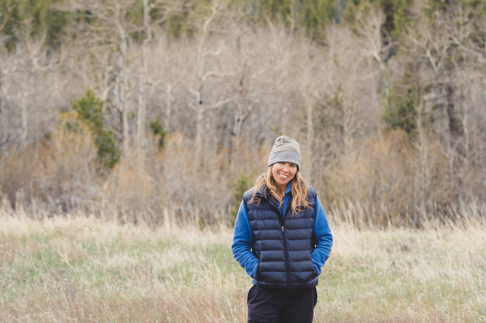
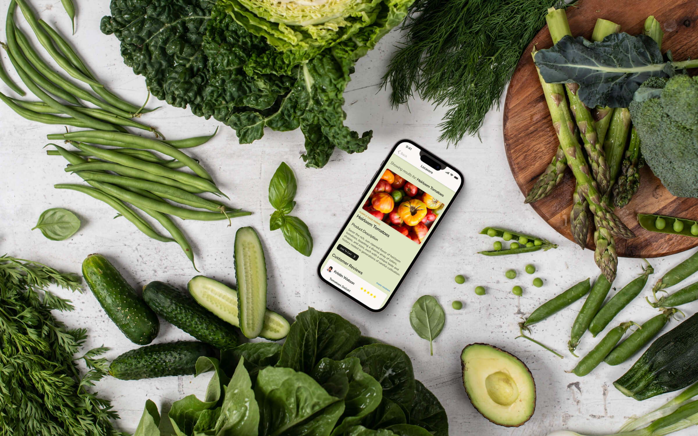
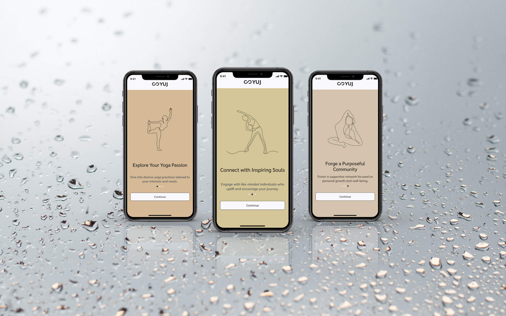
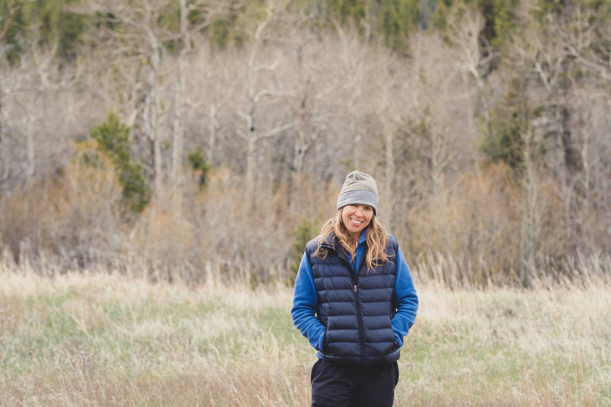
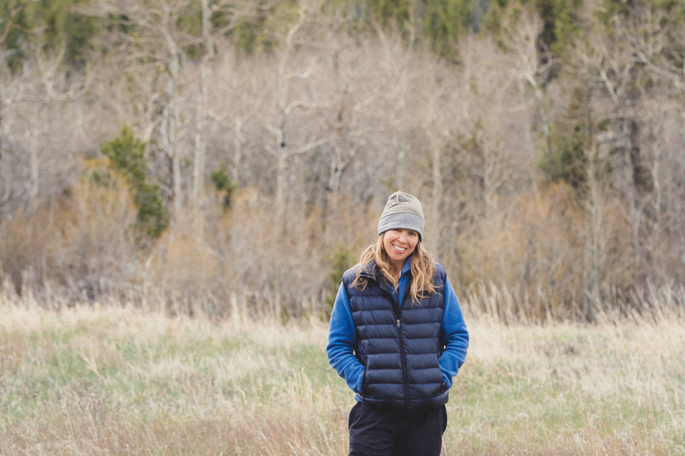

About
Portfolio
Contact

Kim Nellans is a product designer who delights in crafting user stories, is vigilant about pixel-perfect UI, and currently obsessed with design systems.
Green Yogini
How Might We Transform Our Old Clothes into Stylish, Eco-Friendly Wear?
Read the Case Study
Locavore
How Might We Enjoy Fresh Farmers Market Produce When We Can't Get There?
Read the Case Study

YUJ
How Might We Find and Connect with Yoga Enthusiasts Around Us?
Read the Case Study


 
